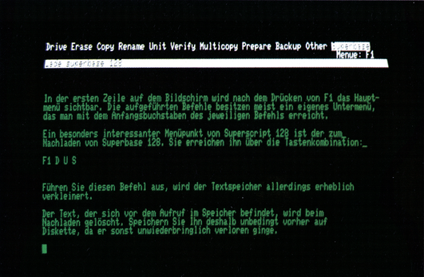

Ein starkes Paar
Professionelle Text- und Datenverarbeitung gleichzeitig auf dem C 128 — nur ein Traum? Superbase 128 und Superscript 128 erfüllen Ihnen diesen Wunsch.
Die bisher in der 64er vorgestellten professionellen Programme für den C 128 haben bereits gezeigt, daß sich dieser Computer durchaus auch für eine kommerzielle Anwendung eignet. Das Duo Superbase 128 und Superscript 128 von Precision Software deckt einen weiten Bereich der kommerziellen Nutzung eines Personal Computers ab: Text- und Datenverarbeitung. Wir haben beide Programme bereits in der Ausgabe 2/86 für sich allein (als »Stand-alone«-Software) vorgestellt. Noch interessanter werden diese Programme aber, wenn man sie nicht isoliert, sondern als Programmpaket betrachtet.
Superbase 128
Der Name Superbase dürfte C 64-Besitzern nicht unbekannt sein. Dieses Programm hat vor einigen Jahren die Dateiverwaltung auf diesem Computer revolutioniert. Durch die implementierte, leistungsfähige und leicht erlernbare Datenbanksprache ist sicherlich kaum noch ein Problem denkbar, das mit diesem Programm nicht optimal gelöst werden könnte. In unserer Rubrik »Software Corner« haben wir bereits viele nützliche Tips und Tricks zu Superbase 64 veröffentlicht. Bei der Anpassung auf den C 128 wurden nur geringfügige Änderungen vorgenommen, so daß Sie diese Tips auch für die Version zu diesem Computer nutzen können:
- Die Menüpunkte von Superbase 64 wurden vollständig, aber auch ohne zusätzliche Erweiterung übernommen.
- Die Bildschirmausgabe kann bei dieser Version wahlweise mit 40- oder 80-Zeichendarstellung erfolgen.
- Bei Verwendung einer 1571-Diskettenstation können 1328 Diskettenblöcke für die Ablage der Daten genutzt werden (Verdopplung der Speicherkapazität).
- Die Datensätze von Superbase 64 (Version 1) können auch mit der Version 2 für den C 128 gelesen, beziehungsweise mit dem mitgelieferten Konvertierprogramm »UTILITY64« in das neue, komprimierte Format gebracht werden. Das bedeutet, daß bestehende Daten weiterhin verwendet werden können und nicht erneut erfaßt werden müssen.
- Die deutschen Sonderzeichen können nun auch auf dem Bildschirm dargestellt werden.
- Für Programme innerhalb des Datenbankprogramms stehen dem Anwender, bei Verwendung beider Speicherbänke, 62 KByte RAM zur Verfügung.
- Die Befehlswörter zur Bearbeitung der Daten wurden nurinfolgenden Punkten geändert beziehungsweise erweitert:
COLS (liefert die aktuelle Bildschirmdarstellung)
MODE (Umschalten von 40- auf 80-Zeichendarstellung und umgekehrt)
PERFORM (ersetzt den Superbase 64-Befehl DO)
SUPERSCRIPT (Sprung zu Superscript 128)
Besonders interessant ist sicherlich der neue Befehl SUPERSCRIPT. Dieser ermöglicht einen Einsprung in dieses Textverarbeitungsprogramm und stellt somit eine echte Schnittstelle zu Superscript 128 dar. Das heißt Superbase 128 und Superscript 128 können sich gleichzeitig im Speicher des C 128 befinden und ermöglichen so einen bequemen Datentransfer. Konkret: Die Datensätze, die man zum Beispiel mit dem FIND-Befehl aus der Datenbank ausgewählt hat, können von Superscript 128 übernommen und so leicht in einen Serienbrief integriert werden. Bevor diese Möglichkeit an einem Beispiel gezeigt werden kann, ist eine kurze Beschreibung der Möglichkeiten von Superscript 128 notwendig.
Superscript 128
Superscript 128 wird zum einen über Befehlstasten gesteuert, die in Kombinationen mit der <CTRL>-Taste direkt aufgerufen werden, und zum anderen über ein Hauptmenü mit insgesamt 25 Untermenüs. Um eine der darin enthaltenen Funktionen auszuführen, muß man zunächst <Fl> drücken. In der obersten Zeile wird dann als erstes das Hauptmenü sichtbar. Die hier aufgeführten englischen Befehle können mit den Cursor-Tasten und nachfolgendem <RETURN>, aber in den meisten Fällen auch mit ihrem Anfangsbuchstaben, angewählt werden. In einer inversen Kommentar- und Tabulatorzeile, zwei Zeilen darunter, befindet sich eine deutsche Übersetzung der aktuellen Unterfunktion. Hat man einen Punkt angewählt, erscheint meist ein Untermenü mit weiteren Befehlen, für die gleiches gilt. Mit <F3> gelangt manzurück in dasjeweils übergeordnete Menü.
Da es recht umständlich ist, bestimmte Funktionen über die verschiedenen Menüebenen anzuwählen, kann man von der Möglichkeit Gebrauch machen, frei wählbare Tasten mit Befehlssequenzen (oder mit Textbausteinen) zu belegen. Zur Ausführung der auf diese Weise festgelegten Befehlssequenzen ist dann lediglich das Drücken von <RUN/ STOP> oder <ESC>, gefolgt von der jeweiligen Taste, erforderlich. Mit Ausnahme der Funktions-- und Cursor-Steuertasten, deren Funktion nicht verändert werden kann, ist es möglich, alle Tasten doppelt zu belegen (geSHIFTet und ungeSHIFTet). Die Programmierung der Tastatur ist recht einfach: Man wählt zunächst mit <Fl> <S> <C> (ent spricht dem Befehl <S>et <C>ommand) den Unterpunkt zur Tastenprogrammierung an. Daraufhin erscheint die Frage nach der Befehlstaste. Nachdem man die gewünschte Taste gedrückt hat, kann man die Befehlssequenz eingeben. Der erste Befehl muß natürlich das Drücken von <Fl> simulieren, da alle wichtigen und sonst umständlich aufzurufenden Befehle über das Hauptmenü erreichbar sind. Diese Taste wird in der Befehlssequenz durch </> dargestellt. Zum Anwählen eines Menüpunktes genügt, wie bereits erwähnt, meist der Anfangsbuchstabe dieser Funktion. Wollen Sie abschließend ein <RETURN> simulieren — was bei einigen Befehlen notwendig ist, die eine zusätzliche Tastatureingabe verlangen (zum Beispiel bei Filenamen) — geben Sie hierfür <Pfeil-hoch> und <M> ein. Das klingt vielleicht kompliziert, ist es aber nicht. Zur Belegung der <$>-Taste mit der Directory-Funktion ist beispielsweise nur die Sequenz »/Ad« einzugeben. Übersetzt bedeutet sie: <Fl> <D>okument <D>irectory. Nachdem Sie die Eingabe der Befehlssequenz mit <RETURN> abgeschlossen haben, wird jedesmal, wenn Sie <RUN/STOP> <$> eingeben, das Inhaltsverzeichnis der Diskette eingelesen. Die so programmierte Tastatur kann dauerhaft ineiner Datei mit dem Namen »DEFAULTS« gespeichert werden und wird dann jedesmal beim Starten von Superscript 128 automatisch nachgeladen.
Zu den Superscript-Funktionen zählt auch das Nachladen von Superbase 128 (<Fl> <D>okument <U>tility <S>uperbase <RETURN> beziehungsweise »/dust m«). Dieser Befehl hat natürlich zur Folge, daß vonnunannurnocheine der vorhandenen Speicherbänke von Superscript 128 genutzt werden kann, da die zweite jetzt von Superbase 128 belegt wird. Der freie Speicherplatz für Texte wird bei Aufrufdieser Funktion also erheblich verkleinert (anstelle der 75 KByte bei zwei genutzten Bänken stehen nur noch rund 8 KByte für den Textzur Verfügung). Der Programmspeicherumfang von Superbase 128 wird aus demselben Grund von 62 auf 8 KByte reduziert. Beim Nachladen von Superbase 128 wird der im Speicher befindliche Text gelöscht, so daß er unbedingt zuvor auf Diskette gespeichert werden sollte (Superscript 128 gibt eine entsprechende Warnung aus).

Will man mit beiden Programmen gleichzeitig arbeiten, ist dies ausschließlich über diesen Menüpunkt von Superscript 128 einzuleiten. Der umgekehrte Vorgang, das Nachladen von Superscript 128 innerhalb Superbase 128, ist nicht möglich.
Nach dem Laden der Datenbank befinden Sie sich so lange in diesem Programm, bis Sie den Befehl zum Beenden (QUIT) oder zur Rückkehr zu Superscript 128 geben b»SUPERSCRIPT (Parameterliste)«). Hierbeikönnen Sie auch gleichzeitig Superscript-Befehlssequenzen, wie sie bereits oben kurz beschrieben wurden, übergeben, die dann sofort ausgeführt werden. Es ist so mit einereinzigen Befehlssequenz möglich, von Superbase 128 in das Textverarbeitungsprogramm zu springen, einige Funktionen ausführen zu lassen und anschließend zu Superbase 128 zurückzuspringen:
superscript from "hlist",
"/dl" + "text" + "tm" +
"/pmp" +"/qy"Diese Befehlssequenz veranlaßt beispielsweise den Rücksprung zu Superscript 128 mit den ausgewählten Datensätzen in der Liste »HLIST«. Hier wird zunächst die Textdatei (Serienbrief-Formular) mit dem Namen »TEXT« geladen (<Fl> <D>okument <L>oad "text" <RETURN> = "/dl" + "text" + "tm?"), dieDaten nacheinander in den Serienbrief eingefügt und ausgedruckt (<Fl> <P>rint <M>erge <P>rin = "/pmp") und danach zu Superbase 128 zurückgesprungen(<Fl> <Q>uit <Y>es = "/ay"). Wichtig hierbei ist, daß sich der Text auf derselben Diskette befinden muß, wie die Datensätze.
Wie Sie aus der letzten Befehlssequenz ersehen können, erfolgt der Rücksprung zu Superbase 128 diesmal nicht mit dem oben genannten Befehl zum Nachladen, sondern mit »QUIT« Superscript 128. Andernfalls würde Superbase 128 tatsächlich erneut geBOOTet und der Text im Speicher würde verlorengehen. Superscript 128 befindet sich trotz des QUIT- Befehls noch im Speicher. Solange Sie nicht zuvor auch Superbase 128 beendet haben, führt QUIT innerhalb von Superscript 128 immer zum Einsprung in die Datenbank (ohne Programm- und Textverlust).
Standardvordrucke und Serienbriefe
Die Serienbrief-Funktion (Merge) von Superbase 128 sieht zwei unterschiedliche Verfahren vor: manuelles und automatisches Füllen eines Standardformulars. Beim manuellen Füllen ist an den vorher gekennzeichneten Stellen variabler Text, zum Beispiel Anschriften, von Hand einzusetzen. Bequemer und interessanter ist jedoch das automatische Einsetzen von Daten. Hierzu benötigt man neben dem Standardformular normalerweise eine Textdatei, die die einzusetzenden Datensätze enthält. Die andere, noch einfachere Möglichkeit ist, die Daten aus einer Superbase-Datenbank direkt zu importieren. In diesem Fall muß lediglich ein Standardformular erstellt werden, das neben dem konstanten Text sogenannte »Platzhalter« enthält. Diese Platzhalter werden während des Schreibens über die Menüfunktion inden Text integriert. Beider Deklaration eines Platzhalters ist die Eingabe eines Namens und des Typs notwendig. Superscript 128 unterscheidet hierbei zwischen Platzhaltern variabler (VARIABLE), feststehender (FIXED) und bedingter Länge (CONDITIONAL). Der Zwang zur Verwendung von Namen und zur Angabe des Typs bei Platzhaltern erscheint auf dem ersten Blick umständlich, ist aber bei näherer Betrachtung in vielen Fällen ausgesprochen hilfreich und zeitsparend.
Wollen Sie die Daten direkt aus Superbase 128 importieren, müssen Sie die Platzhalter mit denselben Namen versehen, wie die entsprechenden Datenfelder in Ihrer Superbase-Eingabemaske. Haben Sie Ihr Standardformular mit den notwendigen Platzhaltern entworfen, speichern Sie dieses zunächst auf Diskette und springen mit dem QUIT-Befehl in das Superbase 128-Hauptmenü. Wählen Sie nun die Datenbank und die Datei mit den Daten, die Sie (teilweise) in das Standardformular einfügen wollen. Mit dem Befehl FIND "LISTE" können Sie aus den Datensätzen diejenigen auswählen, die Sie für das Rundschreiben benötigen (zum Beispiel alle Personen, die noch Zahlungen an Sie zu leisten haben). Alles, was Sie nun noch zu tun haben, ist den folgenden Befehl einzugeben und <RETURN> zu drücken:
SUPERSCRIPT FROM "LISTE",
"/dl" +"filename"+
"t M" +"/PMP"+ "/QY"Superbase 128 übergibt im folgenden alle ausgewählten Datensätze an Superscript 128, fügt diese nacheinander in das Formular ein und druckt sie aus.
Superscript 128 bietet neben den beschriebenen noch eine Reihe anderer nützlicher Funktionen, wie zum Beispiel Rechnen im Text, um beispielsweise auf einfache und komfortable Weise Rechnungen zu erstellen. Insgesamt gibteskeinen wichtigen Punkt, denmanan diesem Programm vermißt. Durch das gelungene Zusammenspiel mit Superbase 128 verschmelzen die beiden einzelnen Programme zu einem einzigen, leistungsfähigen »integrierten« Programmpaket. Dennoch muß man bemängeln, daß die Handhabung von Superscript 128 durch die vielen Menüs zwar recht einfach, aber häufig auch umständlich ist. Es ist daher mehr als hilfreich, die wichtigsten und am häufigsten genutzten Befehle aufeine »logische«, das heißtleicht merkbare Tasten zu legen und diese Tastaturbelegung in der »Defaults« Datei zu speichern.
Alles in allem hat das Duo in der Redaktion Gefallen gefunden und ist sicherlich für den professionellen Einsatz empfehlenswert. Negativ muß jedoch die geringe Geschwindigkeit bewertet werden, mit der Texteingaben bei Superscript 128 verarbeitet werden. Beide Programme kosten inklusive deutschem Handbuch mit UÜbungslektionen jeweils 198 Mark.
(nj)Info: Commodore Büromaschinen GmbH, Lyoner Str. 38, 6000 Frankfurt/Main 71